Scene 01Every story begins
with a single frame.
Scene 02We chase the light.
Scene 03We find the angle
no one else saw.
Scene 04Then — we focus.
Tubo Shot This — Videography & Photography
Tubo Shot This is a videography & photography studio built on one belief — a frame should feel like a memory before it becomes one. We light it, we wait for it, and when it arrives, we don’t miss.
Stills
that move.
A contact sheet from the studio floor — campaigns, portraits and the quiet moments between takes.
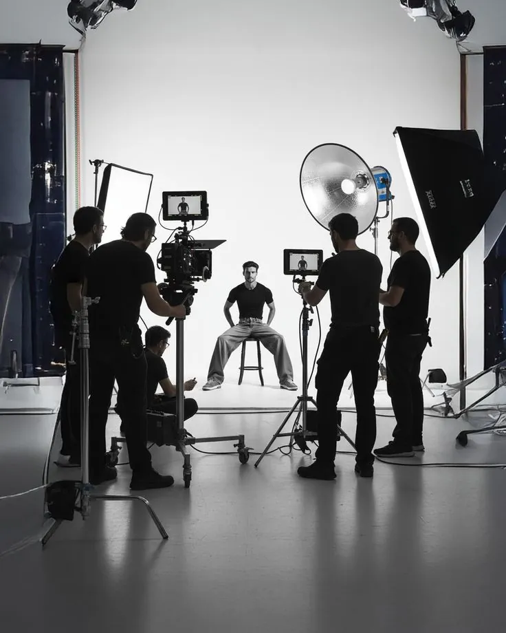
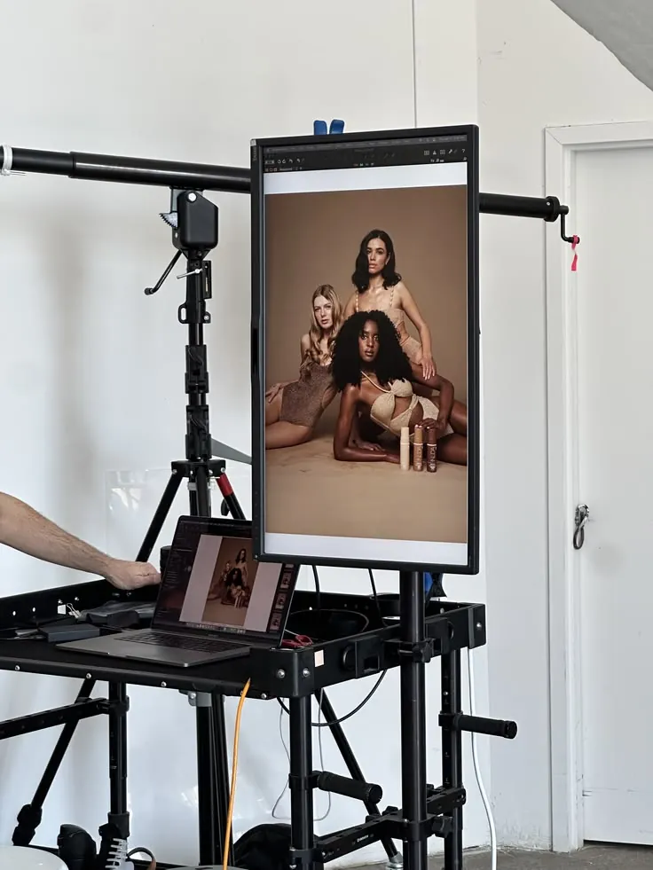
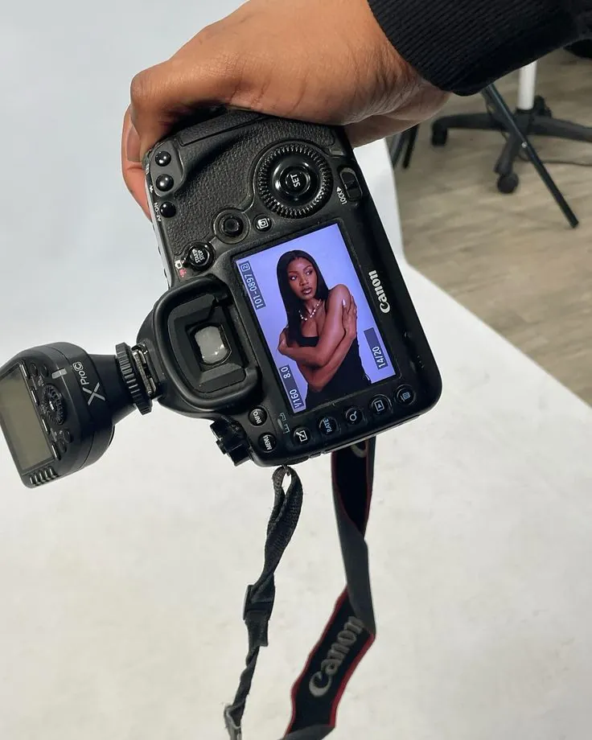
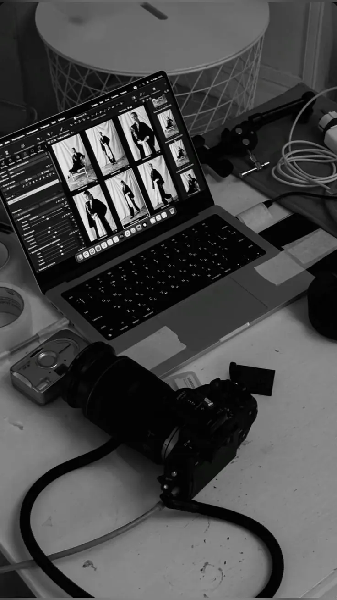
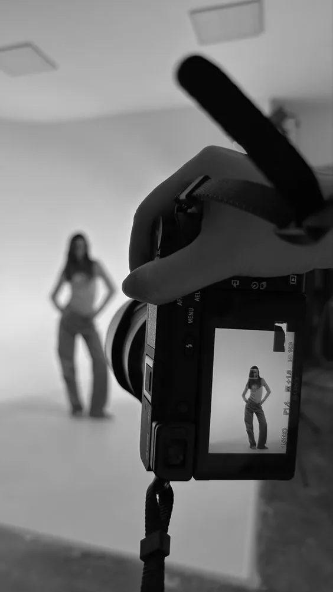
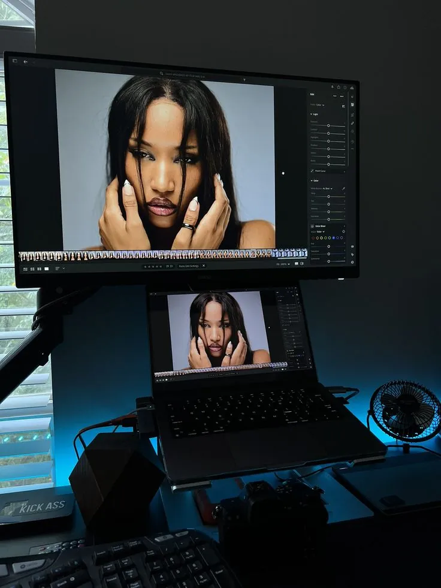
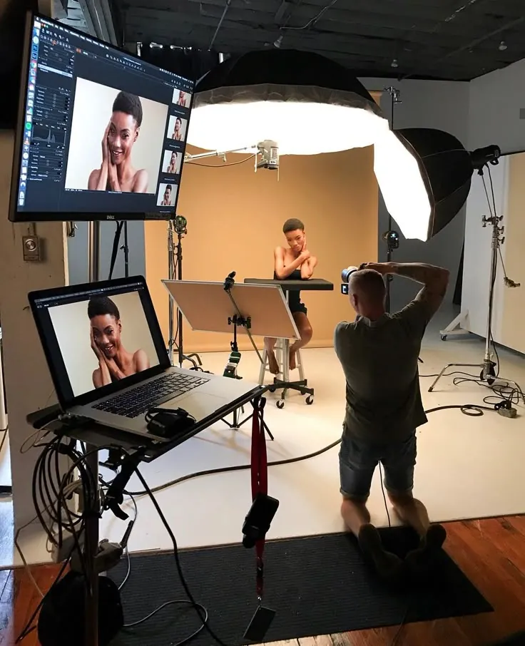
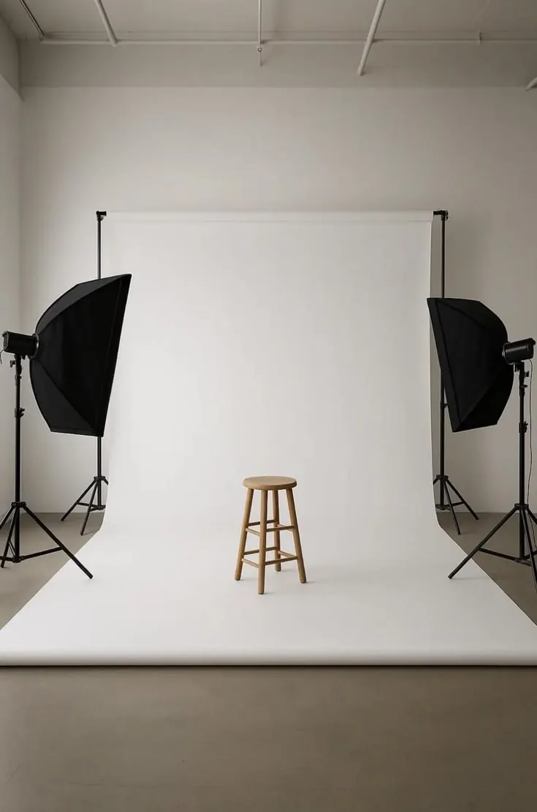
Every one of them
shot on purpose.
Light,in motion.
Music videos · Brand films · Fashion films · Events
We build the room
before we roll.
Softboxes, rails, a gimbal that never sleeps. Every set is designed around the one moment your story needs — then we shoot it from every angle that matters.
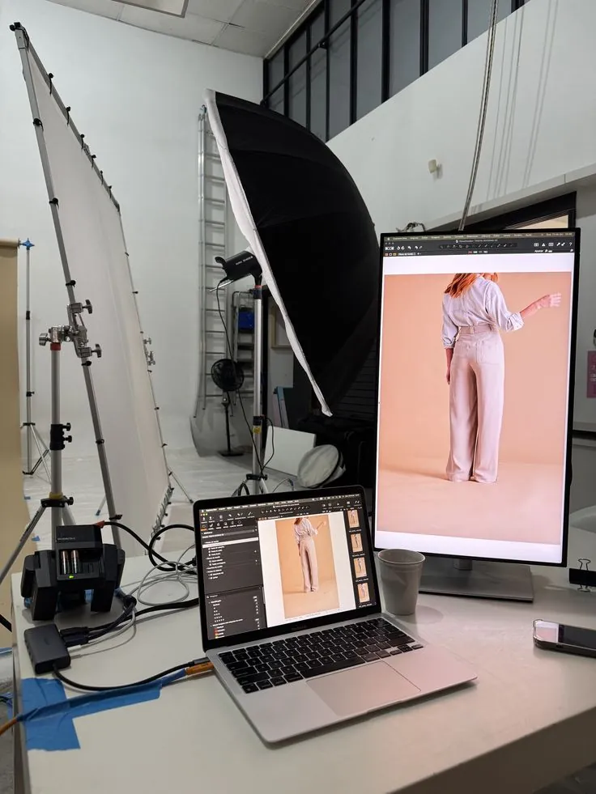
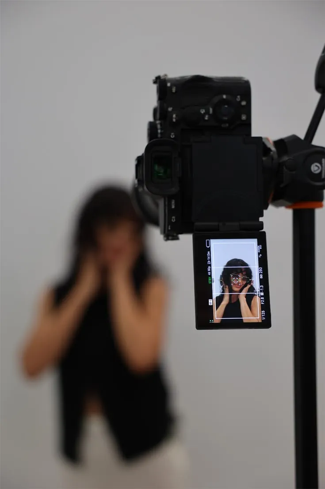
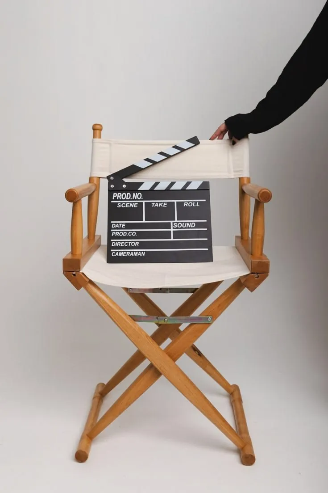
- 01
Pre-production
Moodboards, locations, call sheets, casting. The film is made here — we just haven’t pressed record yet.
- 02
Shoot day
Lean crew, cinema glass, tethered review. You see the frames as they happen.
- 03
Edit & colour
Rhythm, sound and a grade built for your brand — not a preset.
- 04
Delivery
Masters, cut-downs and stills sized for every screen they’ll live on.
- 01
Brand Campaigns
Stills + motion
- 02
Editorial & Portrait
Studio · Location
- 03
Music Videos & Film
Concept to grade
- 04
Events & Live
Coverage · Recaps
- 05
Product & E-commerce
Clean · Consistent
- 06
Social Content
Vertical-first